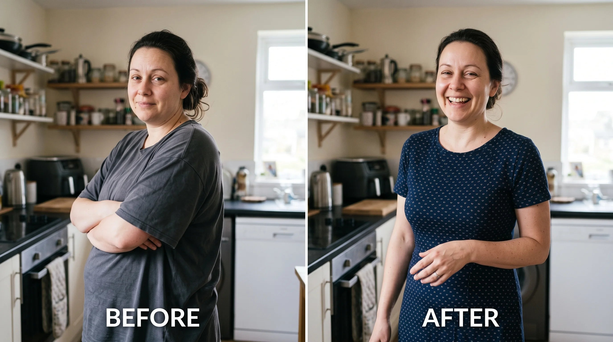
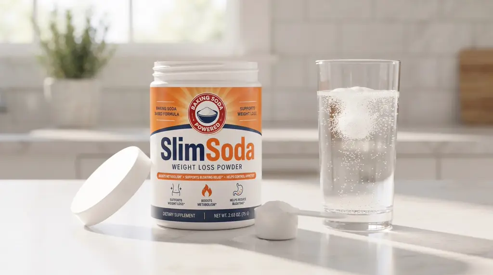
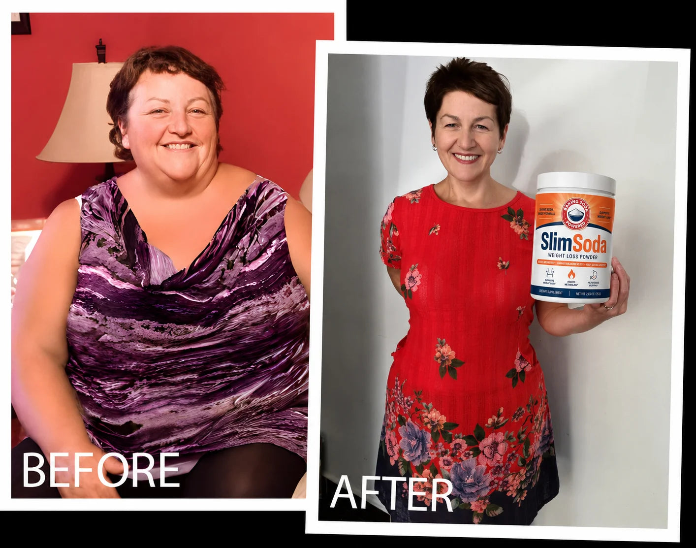
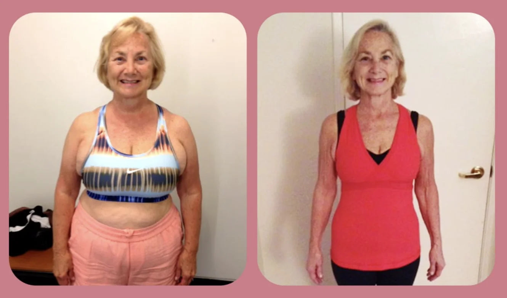
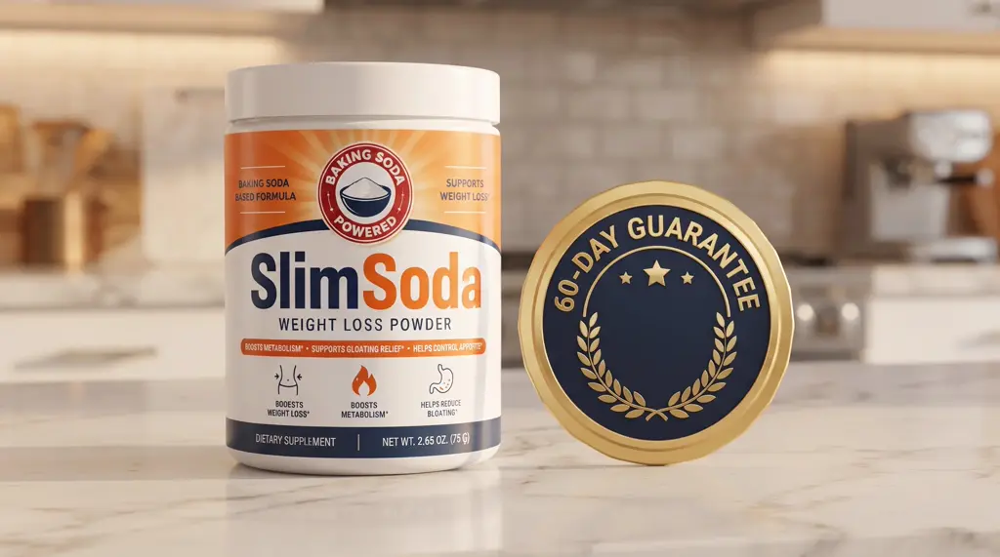

The “Baking Soda Water Shot” Everyone’s Talking About Is Real. But They’re Doing It Wrong. I Should Know. I’m the One Who Created It.
You’ve seen the videos. Famous faces, talk-show couches, all suddenly whispering about a baking soda shot that melts fat without dieting or exercise. Here’s the part none of them will tell you: the recipe only works if you do it in the right order. This is the original.
If You Eat Less Than Your Skinny Friend and Still Gain Weight, This Is the Article You’ve Been Waiting For
Let me guess.
You’ve tried everything. The programs. The shakes. The gummies.
The treadmill that’s now a very expensive coat rack.
You eat less than the naturally-thin woman down the street. You move more than she ever has.
And your body holds onto every single pound like its life depends on it.
Then your doctor says the two most insulting words in the English language: “eat less.”
I know exactly how much that stings to hear.
Because those are the same two words I once said to my own sister. And I have never been more wrong about anything in my life.
So let me say the thing no one has said to you yet.
It was never your willpower. It was never your fault.
Your body was fighting you. And until you understand why, nothing will ever work.
Lately your whole feed has been famous women talking about a “baking soda water shot.” You’ve heard it enough times that it’s starting to feel real.
Here’s what they’re leaving out.
The baking soda is only one of three pieces. Do it alone, or in the wrong order, and you’ll feel nothing.
Do it right, and the weight comes off so fast you’ll have to slow yourself down.
I’m going to show you exactly how. Because I’m the woman who figured out the recipe in the first place.
Read this before you spend another dollar on anything else.
I Was the Skinny Sister. I Told Her to Eat Less and Try Harder. I Was Dead Wrong.
My name is Dana.
I’m not a celebrity. I’m not a doctor on a stage. I’m a formulator and a researcher.
And for most of my life, I was the “lucky” one. The naturally slim sister who could eat whatever she wanted and never think about it.
I used to believe that was because of something I did right. Some discipline other people just didn’t have.
So when my little sister Rachel couldn’t lose the weight after her kids, I told her the same lie your doctor tells you.
Eat less. Move more. Try harder.
I need to confess that, because it’s the whole reason I’m writing this.
I judged my own sister. I quietly believed that if she just wanted it badly enough, she’d get there.
I was wrong. Not a little wrong. Completely, shamefully wrong.
And the day I finally found out how wrong, it sent me down a path that ended in the exact recipe those videos are now built on.
They just left out the part that makes it actually work.
So I Measured Every Bite She Ate for Two Weeks. What I Found Stopped Me Cold.
Rachel is my little sister. Three kids, a job, a husband, and a body she didn’t recognize anymore.
Her youngest was three years old and she still looked, in her words, “five months pregnant.”
She got dressed in the closet so her husband wouldn’t see her. She had stopped being in photos with her own kids.
And there I was, the skinny older sister, telling her to eat less and walk more.
One day she looked at me with tears in her eyes and said, “Dana, I AM. I swear to God, I am.”
So I decided to prove it, one way or the other.
For two weeks, I measured and logged every single thing we both ate. I counted our steps. I wrote all of it down.
I will never forget the moment I looked at those two columns of numbers.
My little sister was eating less than me. She was moving more than me. And she was gaining weight, while I stayed thin doing half of what she did.
That’s when the shame hit me. She wasn’t lazy. She wasn’t lying. She wasn’t weak.
Something inside her body was doing the exact opposite of mine with the very same food.
No diet on earth was ever going to fix a problem that nobody had correctly named.
That was the night I stopped trusting everything I’d been taught, and started looking at what her body was actually doing with what she ate.
At 1 A.M. I Found the Study That Explained What Was Happening to My Sister
It took me months of digging through research most people never see.
Then one night, her kids asleep, my coffee cold, I found it.
A study on the cells in your gut that make one specific hormone. The hormone that decides what your body does with every bite you eat.
Burn it for energy, or store it as fat.
The paper had a line I read five times.
It said these cells can go dormant. They fall asleep, in an environment that’s become too acidic.
I sat there with my heart pounding.
Acidic gut. Dormant cells. No signal.
That was Rachel. That was every woman I knew who ate like a bird and still couldn’t lose a single pound.
What I read next explained not just why she was stuck, but exactly how to wake those cells back up.
And it’s simpler than you could possibly imagine.
It’s Not That You Eat Too Much. Your Body Is Storing Food It Should Be Burning.
Here’s what’s actually happening inside you. Plain and simple.
Every bite you eat has to go one of two places.
It gets burned for energy, or it gets stored as fat.
That decision isn’t random. A hormone makes it.
The cells in your gut produce that hormone. When they’re awake, it flows, and your food gets sent to be burned as energy.
That’s the “lucky” metabolism thin women have. They aren’t eating less than you. Their food is just going to the right place.
But when those cells go dormant in an acidic gut, the hormone stops.
And with no signal telling your body what to do with your food, it defaults to the worst setting. Store everything.
A salad. A grilled chicken breast. An apple.
Filed away as fat, every single time.
Now you can see why eating less never worked.
You were never eating too much. Your body was storing the little you ate instead of burning it.
You could eat half of what your skinny friend eats and still gain. Because her food gets burned, and yours gets stored.
Same food. Opposite destination.
And there’s a second thief.
Even when your gut makes a little of that hormone, an enzyme called DPP-4 shreds it within minutes. Before it can ever do its job.
So hear me clearly.
It’s not in your head. It’s not your willpower. It’s a switch inside your gut that got stuck on STORE.
And it can be flipped back.
There Are Only Four Ways to Fix This. Three of Them Will Fail You.
Once I understood the real cause, the question got simple.
How do you wake those cells back up and flip the switch off STORE?
There are only four ways anyone has ever tried. Let me save you years.
Way #1: Diet.
You already know how this ends. Eating less can’t wake a dormant cell.
You can starve yourself, and your body will still file every bite as fat. This is why you’re here.
Way #2: Exercise.
You can sweat off a few hundred calories. But the moment you stop, the switch is still stuck on STORE.
Remember, Rachel moved more than me and still gained. You can’t out-walk a body that stores everything.
Way #3: The injections.
Ozempic. Wegovy. Yes, they work. But they don’t wake your cells.
They replace your hormone with a synthetic version. So your body stops making its own entirely.
The moment you stop paying $1,000 a month, it all comes roaring back. Usually worse.
Replacement isn’t a cure. It’s a rental.
Way #4: The three natural ingredients.
Baking soda. Ginger. Berberine.
Maybe you’ve already tried one of them on its own and “felt nothing.” Of course you did. One ingredient can only do one job.
Berberine alone can’t wake the cells AND protect the hormone AND flip the switch. It’s one leg of a three-legged stool.
But all three together, in the right order? That’s the only thing that ever worked for Rachel, and for every woman I’ve handed it to since.
And it’s the one thing those viral videos never explain.
Let me show you why the order is everything.
Wake the Cells. Protect the Hormone. Flip the Switch. In That Order.
The recipe has three ingredients. Each one does one job.
Miss one, and the whole thing collapses. That’s why the baking soda alone does nothing.
Step One. Wake the cells. (Baking soda.)
Plain sodium bicarbonate neutralizes the acid in your gut.
And the dormant cells finally wake up and start producing that hormone again. The one that decides whether your food is burned or stored.
Step Two. Protect the hormone. (Ginger.)
Remember DPP-4, the thief that shreds that hormone in minutes?
Ginger contains a compound called gingerol shown to block that enzyme by up to 93%.
Now the hormone survives long enough to do its job. Send your food to be burned, not stored.
Step Three. Flip the switch. (Berberine.)
Inside you is a metabolic switch that decides: burn this, or store it? After 40, after babies, it gets stuck on STORE.
Berberine is one of nature’s most powerful ways to flip that switch back to BURN.
So the food you eat is finally used as fuel, instead of packed away as fat.
Wake. Protect. Flip. That is the entire secret.
Not one ingredient. Three, in that exact order, in the right amounts.
But knowing the three jobs was the easy part.
Actually getting them to work together in real life almost broke me.
Knowing the Recipe Wasn’t Enough. It Took Me Almost a Year to Make It Actually Work.
Maybe you’re already thinking what I thought.
“If it’s just baking soda, ginger, and berberine, I’ll grab all three and mix them myself.”
I tried that first. It was a disaster.
Here’s what nobody tells you. The three ingredients are only as good as the dose, the form, and the ratio.
Get any one of them wrong, and you feel nothing. Or worse.
Baking soda is a knife-edge.
A pinch too little does nothing. A little too much and your stomach turns. It has to be measured to the gram.
The ginger in your spice rack is useless here.
Raw ginger and cheap ginger powder barely contain any gingerol, the compound that actually blocks DPP-4.
You need a concentrated, standardized gingerol extract. The stuff in your cabinet won’t come close.
Most berberine passes right through you.
The cheap capsules on the shelf are barely absorbed. Your body flushes most of it before it can flip a thing.
You need a bioactive form, dosed correctly.
And even with all three right, they have to be balanced against each other.
Too much of one drowns out another. The order and the ratio are the whole game.
So I turned my kitchen into a lab.
For almost a year, I mixed, weighed, and tested batches on myself. Scribbled ratios on the backs of envelopes. Changed one variable at a time. Threw out far more than I kept.
Most mornings I felt nothing.
Then one morning, I felt it. The switch flipped. Calm. Clear. Light.
I made it again the next day to be sure. And the next.
It worked every single time.
That was the formula. Not “baking soda and some spices.”
An exact mixture. In exact amounts. In exact forms. In the exact order.
That’s what I finally handed my sister.
I Watched My Sister Come Back to Life. This Is Her, Before and After.

I gave Rachel that exact mix. One scoop in water, every morning.
No diet. No gym. Just this.
She called me a week later. Not crying this time.
“Dana… the noise is gone.”
That constant chatter about food, what can I eat, what can’t I, how much.
It had just gone quiet.
Then the scale started moving. Not slowly.
She wasn’t eating less. Her body had simply started burning what she ate, instead of storing it.
She lost the first several pounds so fast I actually told her to ease off and only take it five days a week.
I need you to hear that clearly. This can work so fast you may need to slow yourself down. More is not better. Please respect it.
Four months later, Rachel had lost 41 pounds.
No diet. No gym. One scoop of the powder every morning.
But the number on the scale isn’t the part that makes me cry. It’s this.
For three years she got dressed in the closet so her husband wouldn’t see her. She stopped letting anyone photograph her.
Now look at her.
She went to the lake and didn’t reach for a cover-up. She’s in every single photo with her kids now.
That is the part I would pay any amount of money for. And it cost her almost nothing.
Word spread the way it always does between women who’ve suffered the same thing.
Her friends wanted it. Then their friends. I ended up hand-mixing fresh batches at my counter for hundreds of women.
Then, this year, I turned on the TV. And there was my recipe.
On the news. In slick ads. In celebrity interviews.
Repackaged into an overpriced capsule that got the ratios wrong and buried the powder inside a pill. Two bottles for a hundred dollars.
They took the recipe, watered it down, put a famous face on it, and quadrupled the price.
So I decided to do something about it.
So I Made the Real Thing. The Original Powder, Dosed Correctly. I Call It SlimSoda.

I couldn’t keep mixing it by hand for the whole country. So I did it properly.
I took the exact formula I’d spent a year perfecting to an FDA-registered lab.
Baking soda to wake the cells. Concentrated gingerol to protect the hormone. Bioactive berberine to flip the switch.
In the correct ratio. In the correct forms. In its original powdered form.
Not a capsule. A powder, the way the recipe was always meant to be taken.
One scoop in a glass of water each morning. Three seconds. That’s the whole ritual.
I call it SlimSoda.
Let me be clear about what it is NOT.
It’s not a drug. It’s not an injection. It’s not a starvation plan.
It’s not one of the single-ingredient tricks that did nothing for you.
It’s the complete recipe, the real one, that does all three jobs your body needs, in order.
And I priced it for the women I made it for. Not for a celebrity’s markup.
Real Women. Real Before-and-Afters. No Diet, No Gym, No Needle.
Rachel was just the beginning. Here are three more women who took the exact same recipe.
“I’m 63. I’ve been dieting since Nixon was president. I was the biggest skeptic alive. Down 22 pounds and I have not changed one thing about how I eat. The weight just started coming off on its own.”

“Four grandkids. Four years of ‘I’ll get to it.’ I refused to donate my old jeans because donating felt like giving up. Last week they buttoned. I sat on the floor and cried.”

“I lost weight on the shots and gained it all back plus more the second I stopped, and I couldn’t afford $1,100 a month on a fixed income anyway. This is the first thing that worked AND stayed. No nausea, no needle, no rebound. At 71 I did not think this was still possible.”
A gentle warning, because I mean it. Some women lose weight faster on this than they expect. If that’s you, take it five days a week instead of seven. This is not a race. Respect how well it works.
The Celebrity Capsule Is $100. The Injections Are $1,000 a Month. Today You Get TWO Tubs Of The Original For $27.49.
Let’s talk about what this should cost.
The injections that only rent you weight loss: up to $1,000 a month, forever.
The watered-down celebrity capsule built on my own recipe: $100 for two bottles.
Everything you’ve already wasted on shakes, programs, gummies, and gadgets that did nothing: for most women, thousands of dollars.
SlimSoda was going to be $59.99 for a single tub. That was the plan. That’s the real price.
But I didn’t make this for a markup. I made it for Rachel, and for you.
So I’m releasing it to the public at the launch price of $27.49. That’s already half off what it was going to cost.
When you order one tub today, I’m sending you a SECOND tub, absolutely free.
Today’s Launch Offer
Buy 1 Tub, Get 1 Tub FREE
$119.98 Just $27.49
Two tubs. Two months of your body waking back up. For less than what the celebrity capsule charges for a single bottle of a watered-down version.
Because this is the launch and I’m producing it in small correct-dose batches, I can’t promise this offer holds. When the free-tub run is gone, it’s gone.
Use the Whole Tub. If the Scale Doesn’t Move, I’ll Give You Every Penny Back.

I know you’ve been burned. So I’m taking all the risk off you.
Try SlimSoda for a full 60 days. Use the entire tub.
If the scale doesn’t move, if the food noise doesn’t quiet, if you don’t feel like yourself coming back, email my team and we’ll refund every penny.
Empty tub, no questions, no fight.
You keep the results or you keep your money. The only thing you can’t do is stay stuck.
That’s not a marketing line. That’s a promise from the woman who made it.
60-Day Empty-Tub Promise
Use the whole tub. If the scale doesn’t move, or the food noise doesn’t quiet, email us and we’ll refund every penny. No return-window games, no fine print. Your only risk is doing nothing.
Here’s How to Start Tomorrow Morning
It’s simple.
1. Tap the button below and choose your tubs. (Most women start with two or three. Partly to save, partly because once it works, you will not want to run out.)
2. Enter your details on the secure page.
3. Your SlimSoda ships straight to your door.
Tomorrow morning: one scoop, one glass of water, empty stomach. Three seconds.
Then get on with your day and let your body do what it forgot how to do.
Six Months From Now, You’ll Either Be Free, or Still Reading Articles Like This
Here’s the truth no one likes to say. This doesn’t fix itself.
Another year passes. Another summer in a cover-up. Another photo you’re not in.
The weight doesn’t stay the same. It creeps. And the shame creeps with it.
The saddest words I hear from women are always the same: “I wish I’d started sooner.”
That doesn’t have to be you. Not today.
Picture it. The food noise, gone. Getting dressed with the door open. Your husband looking at you the way he used to.
Being in the photo with your kids instead of always behind the camera.
That’s not vanity. That’s you, coming back.
You gave your body to your children. It’s okay to want a piece of yourself back.
This is the recipe that gives it to you. The real one, done right, from the woman who created it.
Dana Whitfield is an independent formulator and researcher. SlimSoda is a dietary supplement and is not intended to diagnose, treat, cure, or prevent any disease. Consult your doctor before beginning any supplement, especially if you are pregnant, nursing, or taking medication. Individual results vary.